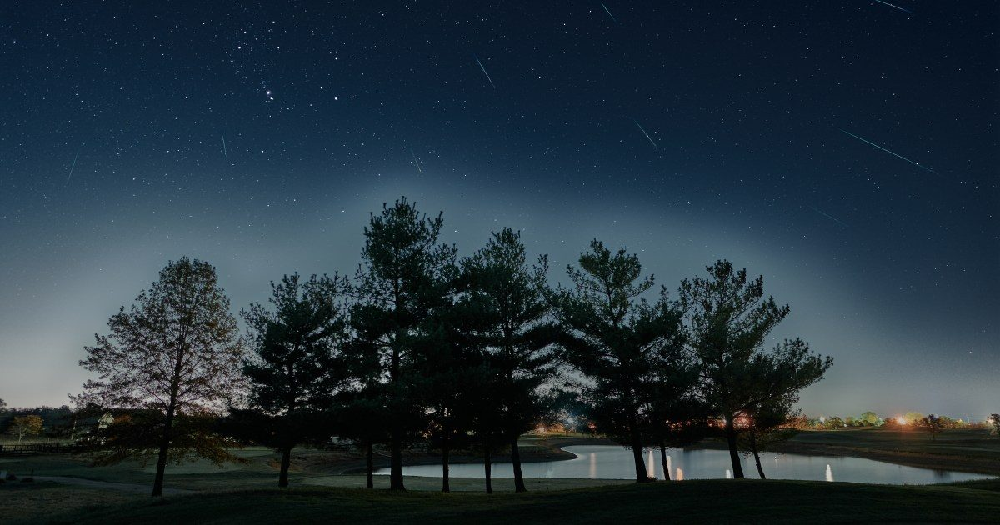

Небо на этой неделе с 16 по 23 октября: пик метеорного потока Ориониды
Пятница, 16 октябряПлутон неподвижен в Козероге в 7 УТРА по восточному поясному времени.
Этим вечером Луна достигает апогея, самой дальней от Земли точки на своей слегка эллиптической орбите, в 18:56 по ВОСТОЧНОМУ поясному времени.
Наш спутник будет находиться на расстоянии 251 434 миль (404 644 км).
Хотя Плутон слишком тусклый для большинства любительских зондов, особенно с Continue reading "Небо на этой неделе с 16 по 23 октября: пик метеорного потока Орионид" The post The Sky This Week fro